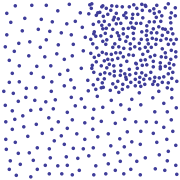
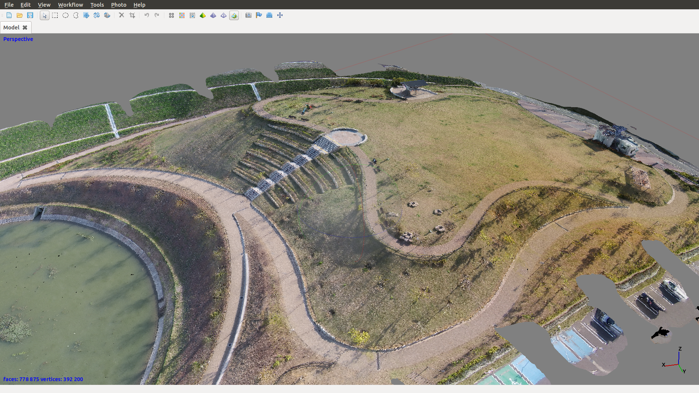
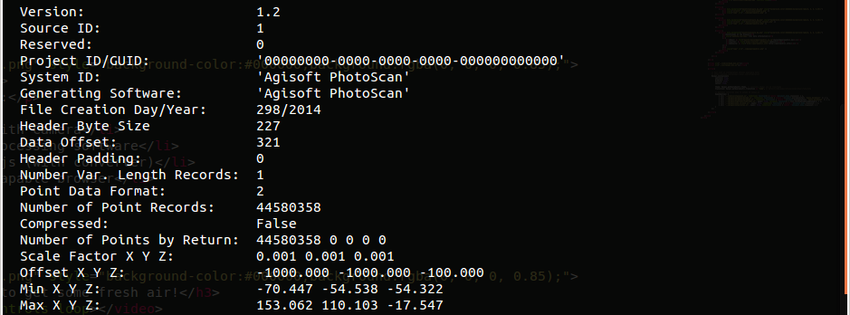
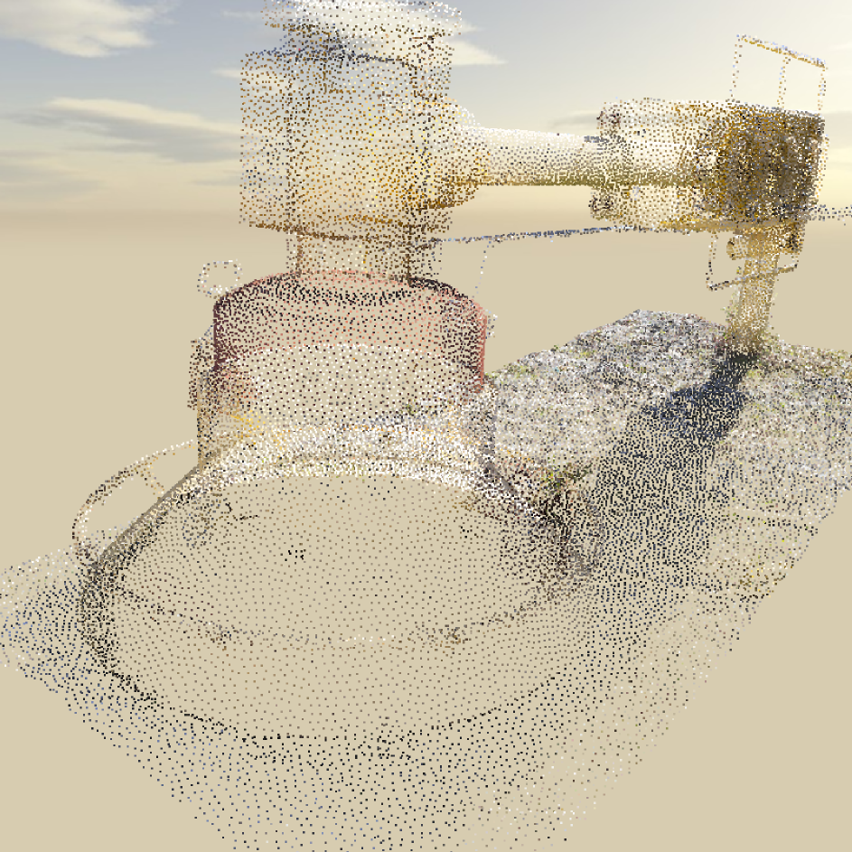
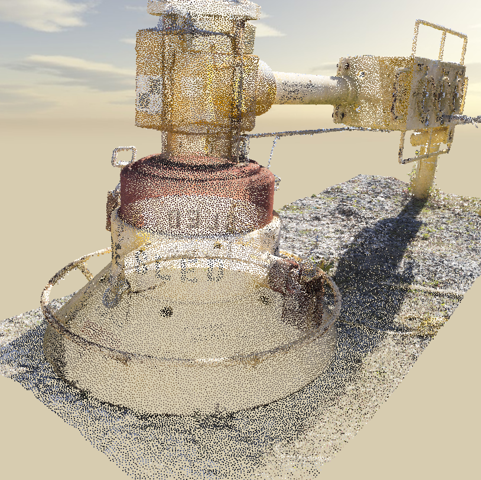
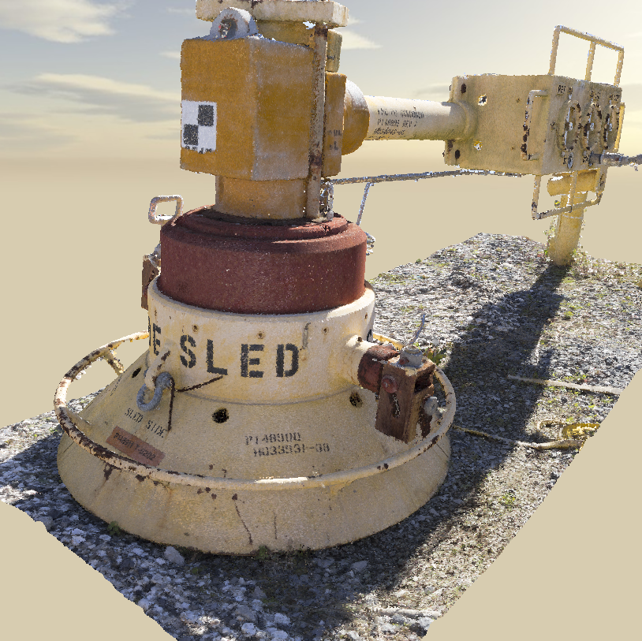
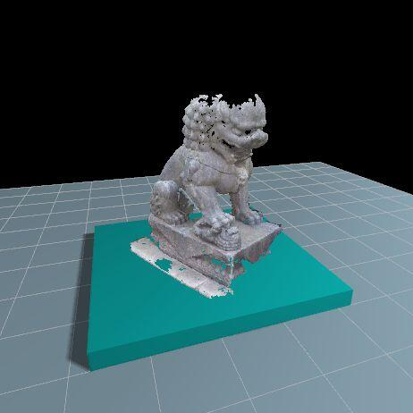
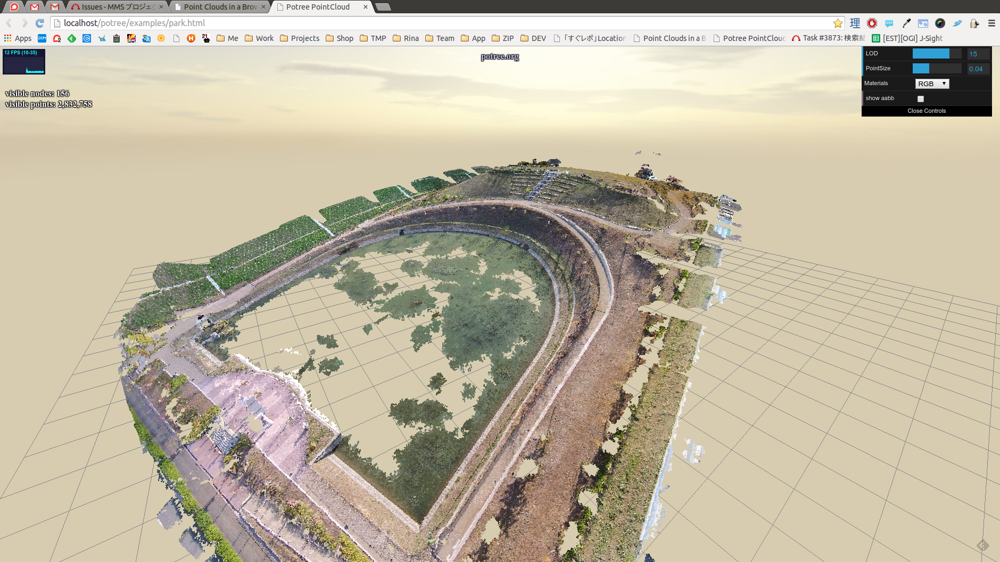

Having fun with Point Clouds
... or how to combine "work" and go to the park with your children
Created by Daniel Kastl / @dkastl

Professional Work

Ingredients
To make your own point cloud you need:
- Drone with Camera
- Post-processing software
- Potree.js (with converter)
- WebGL-capable browser
Playing @ Work
Get some fresh air!
PhotoScan Blackbox

... wait (for a day)...
Lasinfo
1.2 GB LAS file | ~45 Mio. points
Potree Converter
  - Octree Data Structure
- Each node contains a sparse subset of points
- Spacing and levels for performance vs. quality
Potree + Three.js

Potree + Three.js
- Point Cloud Rendering in Web Browsers
- Bachelor Thesis of Markus Schütz
- Pure Javascript and WebGL (no plugins)
- Renders only visible Regions
- Renders up to a certain Level of Detail (LOD)
- More details loaded over time
- All features of Three.js available
- ... a lot more to come!
Demo

PointClouds in the Browser
For more information:
- Email: daniel@georepublic.de
- Twitter: @dkastl
- Webseite: http://georepublic.info